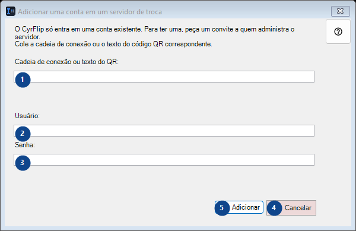
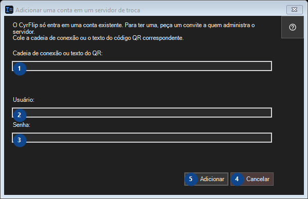

Adicionar uma conta em um servidor de troca
Para que serve
Passe o que você copiou para seus outros dispositivos por meio de um servidor de troca próprio.


Ordem de utilização
Leia as explicações numeradas, escolha os valores necessários e continue com o comando da janela.
Elementos
1. O CyrFlip só entra em uma conta existente. Para ter uma, peça um convite a quem administra o servidor. Cole a cadeia de conexão ou o texto do código QR correspondente.
Escolha ou introduza o valor da etiqueta adjacente. Verifique-o antes de continuar.
Os seus atalhos2. O CyrFlip só entra em uma conta existente. Para ter uma, peça um convite a quem administra o servidor. Cole a cadeia de conexão ou o texto do código QR correspondente.
Escolha ou introduza o valor da etiqueta adjacente. Verifique-o antes de continuar.
Os seus atalhos3. O CyrFlip só entra em uma conta existente. Para ter uma, peça um convite a quem administra o servidor. Cole a cadeia de conexão ou o texto do código QR correspondente.
Escolha ou introduza o valor da etiqueta adjacente. Verifique-o antes de continuar.
Os seus atalhos4. Cancelar
Use este comando para a ação indicada. Leia qualquer confirmação antes de aceitar.
Os seus atalhos5. Adicionar
Use este comando para a ação indicada. Leia qualquer confirmação antes de aceitar.
Os seus atalhos